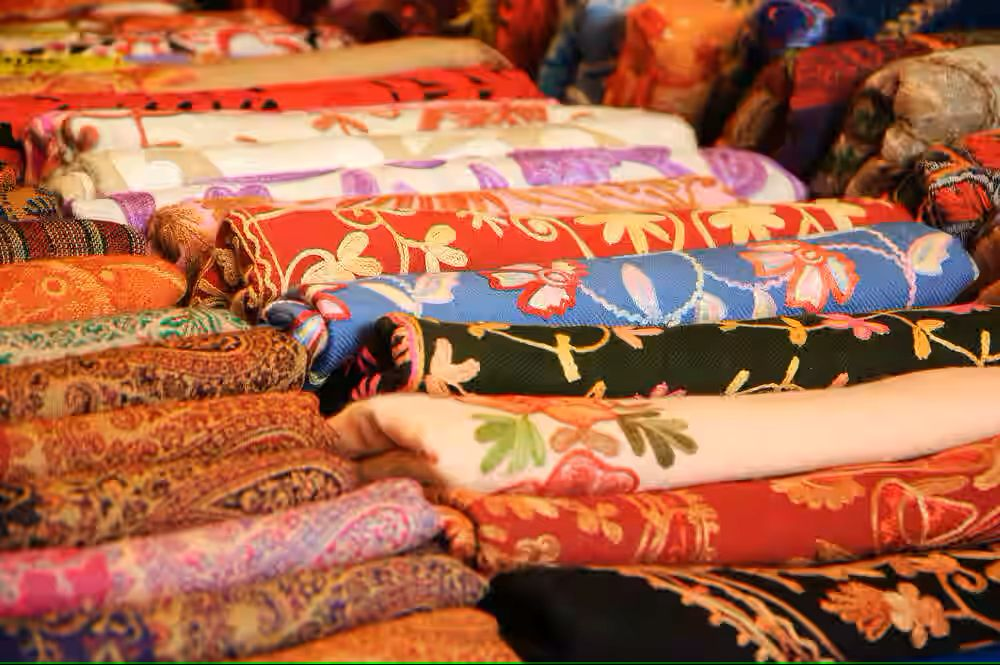
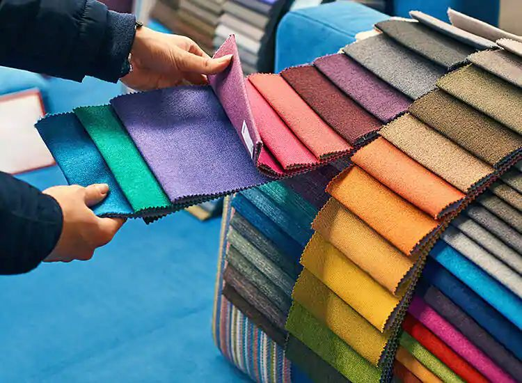

Discover the Pride of Uttarakhand
Explore authentic products from various districts of Uttarakhand.

Explore authentic products from various districts of Uttarakhand.
The Uttarakhand Essence is a tribute to the rich heritage, natural bounty, and traditional artistry of Uttarakhand — brought to life through the One District One Product (ODOP) initiative. Launched by the Government of India, this visionary program empowers local artisans, small businesses, and indigenous communities by spotlighting unique, district-specific products and transforming them into national and global icons.
Nestled in the lap of the Himalayas, Uttarakhand is a land of diverse terrains, age-old traditions, and skilled craftsmanship. From handcrafted woolens and organic grains to herbal wonders and intricate woodcrafts, every district holds a story — a product — that reflects the soul of its people and the spirit of its land. The Uttarakhand Essence celebrates these treasures under the ODOP banner.
The Uttarakhand Essence—through the ODOP initiative—serves as a beacon of economic empowerment for the hill state's communities. By offering financial aid, skill development, branding, and digital exposure, it breathes new life into traditional livelihoods and nurtures inclusive growth rooted in heritage and pride.
In today’s connected world, The Uttarakhand Essence is carried far and wide through e-commerce integration, strategic digital marketing, and participation in global expos. This enables the artisans and producers of Uttarakhand to reach international markets and tell their stories through handcrafted excellence.
With ongoing support in areas like innovation, sustainable packaging, skill enhancement, and export facilitation, the ODOP movement under The Uttarakhand Essence is building a foundation for resilient, self-reliant communities—ensuring that the state’s timeless legacy is honored on a global stage.
When you choose products under The Uttarakhand Essence, you're embracing authenticity, quality, and purpose. Each purchase empowers local artisans, cultivators, and small entrepreneurs, while helping preserve the cultural and economic soul of Uttarakhand.




